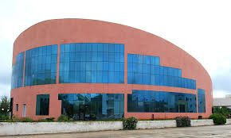
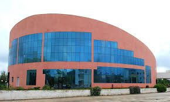

.jpeg)
.jpeg)
.jpeg) 

Visvesvaraya Technological University is a collegiate Public State University in Karnataka State of Republic of India, established by the Government of Karnataka. Apart from a few notable exceptions, VTU has authority over engineering education all over the state of Karnataka.
Visvesvaraya Technological University (VTU, previously spelled "Visveswaraiah Technological University") is a collegiate Public State University in Karnataka State of Republic of India, established by the Government of Karnataka.[9] Apart from a few notable exceptions, VTU has authority over engineering education all over the state of Karnataka. It is a statutory requirement for colleges offering any program in engineering or technology in the state to be affiliated with the university.
The university is named after M. Visvesvaraya from Karnataka, the only engineer to be awarded a Bharat Ratna, the highest civilian award in India. Jnana Sangama, Belagavi is the headquarters of VTU. Additionally, the university has three regional centers in Bangalore, Gulbarga and Mysore.